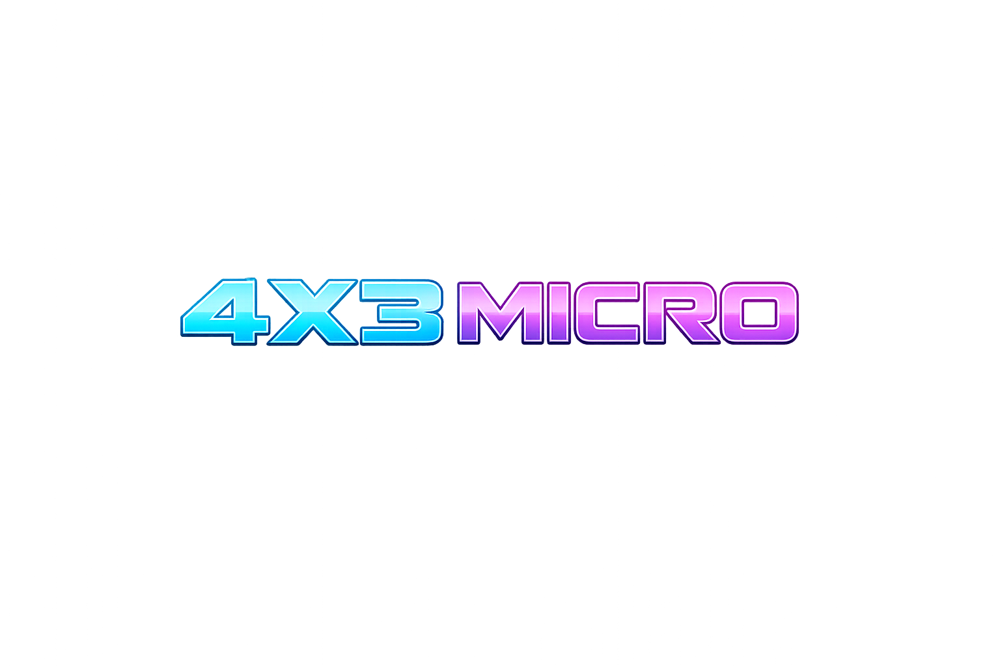

Open hardware for Lumia Stream
Make the desk part of the show.
LumiCon turns physical buttons into reliable stream controls, while its TFT display carries chat, status, alerts, diagnostics, and an optional virtual pet.
36 physical keys
ST7735 TFT display
8787 Lumia listener port

The platform
A controller, a small display, and a useful local API.
The current 6x6 Matrix Mini build combines a Raspberry Pi Pico matrix scanner with an ESP8266 controller. The Pico reports key presses; the ESP8266 manages Wi-Fi, the TFT, HTTP endpoints, and the Lumia connection.
Choose a device
Start with the build on your desk.
Each device page keeps the matching firmware folders, flashing controls, and setup notes together.
Current reference build
6x6 Matrix Mini
36 keys, an integrated ST7735 TFT, RP2040 matrix scanning, ESP8266 networking, Lumia events, display actions, and optional pet mode.
Open the 6x6 setup
Firmware available
4x3 Micro
A smaller LumiCon format for essential actions, with the same browser installer pattern and a dedicated firmware folder.
Open the 4x3 setupHow it works
Two devices, three setup moments.
The phone is used for the device's first Wi-Fi connection. The computer is used for firmware flashing and Lumia, once the controller is on the same network.
Flash the controller
Use the browser installer on a computer with Chrome or Edge and a USB data cable. Hold the inline Firmware button while the ESP8266 is being flashed.
Connect with your phone
Join Lumi-Con-Setup from your mobile phone. Tap the Wi-Fi sign-in notification, or open http://192.168.4.1 in the phone's browser.
Pair Lumia on the network
After the controller shows its new IP address, install the Lumia plugin and register the PC with /plugin?host=<pc-ip>.
Map keys and actions
Use short and long key alerts for controls, then send status, display, celebration, and pet actions back to the TFT.
What the 6x6 build can do
More than a button grid.
Lumia integration
The plugin exposes short presses, long presses, device health, signal strength, labels, and connection state for alerts and automations.
On-device feedback
Send lines, status text, clear commands, and celebrations to the TFT. Chat, diagnostics, pet, and LCD-only modes are available in the current firmware.
Virtual pet system
Optional pet state is stored on the device and exposed to Lumia through status variables and actions such as feed, play, clean, sleep, and reset.
Open build files
The device repository includes firmware source, plugin packages, wiring notes, PCB files, test material, release notes, and 3D enclosure files.
Firmware updates
The update links follow the repository folders.
Device pages read the public site repository tree and collect matching .bin and .uf2 files from the configured folders. Add a new build, commit it, and publish the site; the matching page can then surface it without hand-editing a version list.